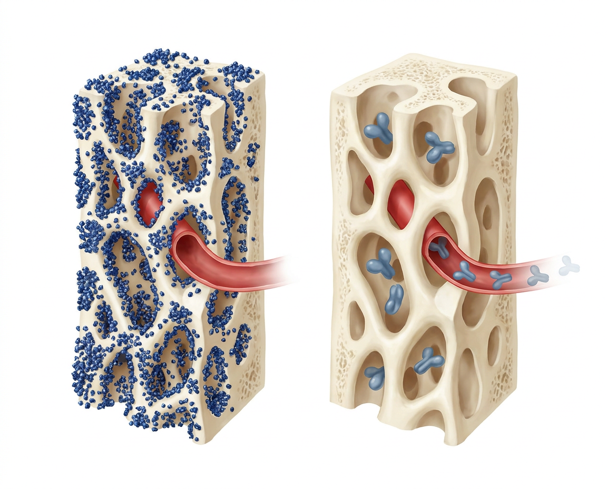
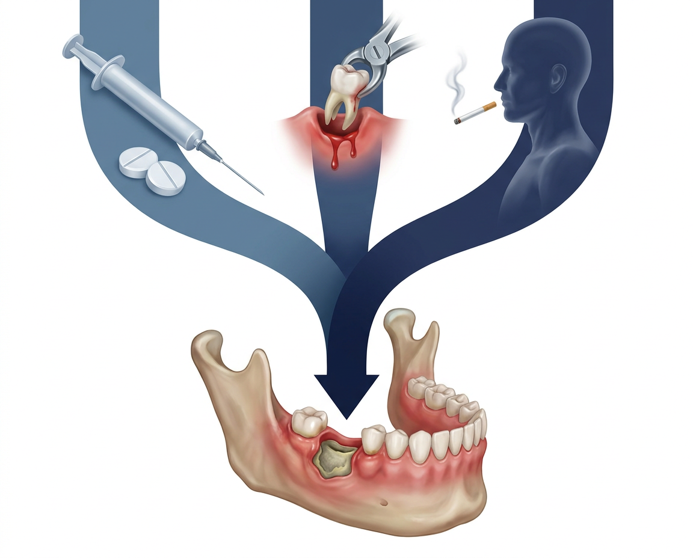

골다공증 약제와 치과 시술,
끊는 것이 답이 아닙니다
MRONJ 는 골다공증 용량에서 1만 명당 수 명입니다. 정작 큰 위험은 턱이 아니라, 약을 끊는 동안 몰려오는 척추골절입니다.

CHAPTER 01 · CONCLUSION
먹는 약은 끊지 않고, 프롤리아는 미루지 않는다
이 덱의 결론을 먼저 놓습니다 — 근거는 뒤 슬라이드에서 하나씩
골다공증 용량 경구 BP의 MRONJ 절대위험은 0.02~0.05%로 위약군 0~0.02%와 겹칩니다(AAOMS 2022). 발치 전 2~3개월 휴약이 MRONJ를 줄인다는 근거는 없습니다 — 메타분석 OR 0.73(95% CI 0.51~1.06, 비유의).
계획 발치는 마지막 주사 3~4개월 후, 재투여는 점막치유(6~8주) 확인 뒤. 중단 시 척추골절률이 1.2 → 7.1/100인년으로 반등하고 발생 골절의 약 61%가 다발성입니다(Cummings 2018). 한국 전국 코호트(14.9만·Kim 2024) 30~90일 지연에 전체 골절 HR 1.2, 별개 코호트(2,594명·Lyu 2020) >16주 지연에 척추골절 HR 3.91.
30초
약 이름 · 마지막 주사일 · 누적 복용기간
이 셋만 확인하면 방향이 정해집니다
1경구 BP — 대개 휴약 불필요
2프롤리아 3~4개월 발치
3재투여 6~8주 뒤
Tip · 암 치료 용량(졸레드론산 4mg 반복·데노수맙 120mg)은 다른 이야기입니다.
CHAPTER 02 · DEFINITION
정의는 세 요소를 다 만족해야 한다
하나라도 빠지면 MRONJ가 아닙니다 — 감별이 먼저입니다
현재 또는 과거 항흡수제(BP·데노수맙)·혈관신생억제제 치료력.
노출골 또는 누공으로 탐침되는 골이 8주 이상 지속. 한국 2025는 괴사가 명백하면 8주 전 조기진단 여지를 둡니다.
악골 방사선치료력이 없고 명백한 전이도 없어야 합니다 — 골방사선괴사·전이와의 감별점.

발치와가 아물지 않고 골이 노출된 상태 — 정의의 두 번째 요소. 설명용 일러스트(실제 임상 사진 아님).
Tip · 세 요소를 다 채우지 못한 병변에 MRONJ라는 이름을 먼저 붙이지 마십시오. 치성감염·골수염이 더 흔합니다.
CHAPTER 03 · STAGING
Stage 0~3 — 함정은 Stage 0에 있다
Stage 0은 특이도가 낮습니다 — 약 50%만 상위 병기로 진행
골노출 없이 설명되지 않는 턱 통증·감각이상·치아동요, 골경화·치유 안 된 발치와 같은 비특이 소견.
1 — 노출골·누공 있으나 무증상, 감염 없음. 2 — 노출골에 통증과 감염 동반(AAOMS 2022).
치조골을 넘는 노출골 · 병리학적 골절 · 구강-상악동/비강 누공 · 하악하연·상악동저 침범.
50%
Stage 0 중 상위 병기로 진행
나머지 절반은 진행하지 않습니다
1Stage 0 — 특이도 낮음
2치성감염과 먼저 감별
3Stage 2부터 감염 동반
Tip · Stage 0을 확정 MRONJ와 같은 확실성으로 다루지 마십시오.
CHAPTER 03 · STAGING
병기는 이렇게 커진다
왼쪽에서 오른쪽으로 — 안 보이던 병변이 턱뼈 전체로 번집니다
네 칸이 Stage 0~3 과 1:1 — ①겉으로 안 보임 ②노출골이 드러남 ③감염이 얹힘 ④치조골을 넘어 광범위 파괴. 설명용 일러스트.
CHAPTER 04 · SCAN
영상은 진단기준이 아니다 — 범위와 감별용
AAOMS 2022는 영상을 진단기준에 넣지 않았습니다 — 특이도 근거 부족
선별에는 유용하지만 병변 범위를 과소평가할 수 있습니다. CBCT가 파노라마보다 피질골·골막 소견을 더 잘 잡습니다.
골경화·골용해·부골·피질골 미란/천공·치유 안 된 발치와·병적골절의 범위 확인에 가장 실용적.
MRI는 골수·연조직 침범 평가에 보조적이며 MRONJ 특이 검사는 아닙니다. 이탈리아 SIPMO-SICMF는 Stage 0에 CT를 쓰자고 주장해 AAOMS와 이견.
0
AAOMS 2022 진단기준에 포함된 영상 소견
범위·감별에 씁니다
1영상만으로 진단 금지
2CBCT/CT — 범위·감별
3MRI — 골수 평가
Tip · 판독지의 골경화 소견 하나로 MRONJ를 진단하지 마십시오.
CHAPTER 05 · RISK SIZE
약제마다 위험의 자릿수가 다르다
암 용량은 MRONJ 위험이 100~1,000배 높다
위약 0~0.02% · 경구BP ≤0.05% · ZOL 5mg/년 ≤0.02% · 데노수맙 60mg 0.04~0.3% · 로모소주맙 0.03~0.05%
ZOL 4mg·데노수맙 120mg 월 1회 — 노출 수십 배, MRONJ 위험 100~1,000배 = 1~15%. 레인이 갈리는 칸도 있다 — ZOL 5mg/년은 AAOMS ≤0.02% / 0.017% / 0.06~0.13% 로 자료마다 다르다.
5종
약제 다섯 종의 절대위험은 자릿수가 다릅니다
실제로 다른 것은 데노수맙 하나입니다
1경구BP ≤0.05%
2데노수맙 0.04~0.3%
3암 용량 1~15%
Tip · 상대위험만 말하면 공포가 커집니다. 절대위험으로 환산해 말합니다.
CHAPTER 05 · RISK SIZE
다른 것은 하나뿐이다
다섯 칸 중 병변이 그려진 칸은 하나입니다 — 데노수맙
①경구BP ②ZOL ③데노수맙 ④로모소주맙 ⑤테리파라타이드. 병변은 ③에만 있습니다. 절대위험의 자릿수 차이를 그림으로 옮긴 것입니다.
CHAPTER 06 · SAME DRUG
같은 데노수맙인데 수가 셋이다
전체 발생률 · 침습시술군 · 발치 코호트 — 분모가 다릅니다
FREEDOM Extension 10년 — ONJ 5.2/10,000 patient-years. 골다공증 용량 사용자 전체가 분모다.
침습 구강시술·사건을 보고한 환자 누적 ONJ 0.68%, 없던 환자 0.05%(Watts 2019).
데노수맙 427명·1,081치아 발치 → ONJ 10명 = 2.3%(Colella 2023).
3
같은 데노수맙에서 나온 세 수
5.2/만PY · 0.68% · 2.3%
분모가 서로 다르다
1전체 5.2/만PY — 발생률
2침습시술군 0.68%
3발치 2.3%
Tip · 어느 수를 말하는지 먼저 정합니다. 분모가 다르면 다른 질문의 답입니다.
CHAPTER 07 · COMPARISON
이 숫자들은 서로 비교할 수 없다
인구집단·추적기간·진단기준이 모두 다릅니다 — 표를 옆으로 읽지 마십시오
다른 것은 위험이 아니라 연구 설계일 수 있다 핀란드 코호트(N=58,367) 저용량 0.3% · 고용량 9.0% — 진단코드 기반이라 AAOMS 추정보다 높다.
경구BP 유병률 0.10%, 발생률 36.6/10만PY. 직접 비교 불가.
아시아 발생률이 서구보다 높다는 보고(Taguchi)가 있다.
금지
분모·추적기간·진단기준이
다른 수는 비교하지 않는다
1임상시험 추정 vs 청구자료
2누적위험 vs 연간발생률
3ZOL — ≤0.02% / 0.017% / 0.06~0.13%
Tip · 표를 가로로 읽으면 위험이 커 보입니다. 같은 분모끼리만 비교합니다.
CHAPTER 08 · ORAL
침습적인가 — 그것이 약제조정을 정한다
비침습 시술에는 약제 조정이 필요하지 않습니다 — 뼈를 건드리는지부터 봅니다
| 치과 시술 |
위험·조정 |
| 스케일링 | 위험 증가 입증 안 됨 — 조정 없음 |
|---|
| 비수술 치주 | 낮음 — 조정 없음, 감염관리 |
|---|
| 근관 | 비외과 근관 — 조정 없음, 근단 유출 주의 |
|---|
| 단순 발치 | BP 0~0.15% · DMB 1~2.3% |
|---|
| 수술발치 | 같은 약제 원칙 — 골연 정리·항생제 |
|---|
| 임플란트 식립 | BP 3/1,000·DMB 0.5%, 중단 불필요 |
|---|
| 주위염 수술 | 감염+골조작 — 침습 분기 |
|---|
| 골이식 | 상악동거상 포함 — 개별화·동의 |
|---|
| 치주골수술 | 증가 가능 — 침습 분기, 최소외상 |
|---|
| 임플란트 제거 | 증가 — 데노수맙 시점 고려 |
|---|
| 치근단절제 | 증가 가능 — 비외과 우선, 개별화 |
|---|
| 의치 점막외상 | 자발 MRONJ 유발 가능 — 틀니 조정 |
|---|
Tip · 약을 끊을지 묻기 전에 그 시술이 뼈를 건드리는지부터 봅니다.
CHAPTER 09 · HOLIDAY
BP 휴약 — 권고와 입증은 다르다
'효과 없음'이 아니라 '입증 데이터 없음'입니다
BP는 골에 결합해 수년 잔류한다. 단기 중단으로 사라지지 않는다.
발치 전 항흡수제 휴약이 MRONJ를 유의하게 줄이지 못했다 — OR 0.73(95% CI 0.51~1.06, p=0.10, 8편·6,808명).
포함 연구 대부분이 관찰연구이고 적응증 교란이 크다. 입증할 데이터가 없었다는 뜻에 가깝다.
비유의
휴약 vs 비휴약 차이
OR 0.73(0.51~1.06)
1골 잔류 — 약리 무용
2메타 OR 0.73 — 유의하지 않음
3무효 증명 아님 — 데이터 부족
Tip · '휴약은 소용없다'와 '휴약의 이득을 입증한 데이터가 없다'는 다른 문장입니다.
CHAPTER 10 · 4-YEAR
'4년 룰'의 현재
의사결정 규칙에서 폐기
경구BP >4년 또는 스테로이드 병용 시 약 2개월 휴약을 prudent로 제시했다.
4년 cut-off 삭제, 휴약 자체는 controversial.
12014 기계적 컷오프
22022 삭제
3위험인자로만
Tip · '4년 넘었으니 무조건 끊는다'는 옛 기준입니다. 기간은 위험인자 중 하나입니다.
CHAPTER 11 · KOREA
한국 2025는 왜 더 처방적인가
임상 선호와 협진 마찰을 줄이려는 타협안입니다 — 절대기준이 아닙니다
장기 경구BP 또는 전신 위험인자 시 2개월. IV 졸레드론산은 마지막 주입 6~12개월 후.
AAOMS는 RCT가 없다며 휴약 권고를 철회했다. 한국은 협진이 끊기는 것을 막으려 시간축을 명시했다.
'절대적 기준이 아니다' — 최근 척추골절 등 초고위험군은 휴약 없이 시술하는 편이 이득.
2개월
장기 경구BP·위험인자 시
한국 2025의 제안 — 절대기준 아님
1경구BP — 2개월(제안)
2ZOL 주입 6~12개월 후
3근거는 관찰연관, 인과 입증 아님
Tip · 한국 권고안의 숫자는 국제 합의가 아니라 국내 협진용 타협안입니다.
CHAPTER 12 · RANKL
데노수맙은 뼈에 남지 않는다
BP 와 다른 약입니다 — 약리가 다르면 전략도 다릅니다
골에 결합하지 않는 RANKL 단클론항체입니다. 파골세포의 분화·기능·생존을 억제하며 가역적입니다.
혈중 반감기 약 25~28일(레인별 25.4일). 주사 6개월경 억제 소실이 시작됩니다.
골전환표지자는 3개월부터 올라 6개월경 기저치를 넘고, 얻은 골밀도는 12개월 안에 되돌아갑니다.

왼쪽 = 골 무기질에 박혀 오래 남는 비스포스포네이트, 오른쪽 = 순환에서 사라지는 데노수맙. 중단 후 반동이 생기는 이유입니다.
Tip · BP 휴약 논리를 데노수맙에 옮기면 안 됩니다. 중단이 아니라 시점입니다.
CHAPTER 13 · REBOUND
중단하면 척추골절이 몰려서 온다
MRONJ 보다 흔하고, 한 번에 여러 개가 무너집니다
FREEDOM 사후분석 — 치료 중 1.2에서 중단 후 7.1/100인년으로 반등했습니다.
중단군 척추골절의 60.7%가 다발성(위약 38.7%), 이전 척추골절이 있으면 OR 3.9.
>3년 사용군 다발성 VF 7.5/100인년(Cosman 2022 는 기간 관련성 부정).

데노수맙 중단 전후 같은 측면 시점 — 다발성 쐐기변형과 후만이 함께 옵니다. 설명용 일러스트.
Tip · MRONJ 절대위험보다 rebound 골절 위험이 훨씬 큽니다.
CHAPTER 14 · DELAY
얼마나 늦출 수 있나 — 절벽이 아니라 경사다
'7개월 안전, 8개월 위험' 같은 생물학적 절벽은 없습니다
한국 전국 코호트(n≈149,199)에서 예정일보다 30일 미만 지연은 위험 증가가 뚜렷하지 않았습니다.
전체골절 HR 1.20(1.1~1.4). 90~180일 지연 구간은 HR 약 1.9(1.6~2.3).
Lyu 2020 척추골절 HR 3.91(1.62~9.45), 누적 2.2 → 10.1/1,000.
16
16주 넘게 늦으면
척추골절 HR 3.91
Lyu 2020 n=2,594
1<30일 — 뚜렷한 증가 없음
230~90일 — 1.20
3>16주 VF
Tip · 위험은 계단이 아니라 연속입니다. 늦었다면 더 늦추지 말고 바로 결정하십시오.
CHAPTER 14 · TIMING
시점이 전부다
한 번의 투여 간격을 왼쪽에서 오른쪽으로 펼쳤습니다
왼쪽 = 마지막 주사 직후, 가운데 = 발치하기 좋은 구간, 오른쪽 = 반동으로 척추가 무너지는 구간. 색이 이어지듯 위험도 계단이 아니라 경사입니다.
CHAPTER 15 · THRESHOLD
7개월인가 9개월인가 — 둘 다 싣는다
권고안의 상한과 코호트의 경계는 대립이 아닙니다. 층으로 읽습니다
재투여 지연은 예정일 기준 3개월, 즉 마지막 주사로부터 총 9개월 이내로 제시된 상한입니다.
HIRA n≈14.9만 · Lyu n=2,594 — 7개월부터 위험이 오릅니다.
목표는 6개월 정시, 실무 경계는 7개월, 9개월은 넘지 말아야 할 선입니다.
6개월
목표 6개월 정시
7개월=실무 경계
9개월=비상 한계
1목표 — 6개월 정시 투여
2실무 경계 — 7개월
3상한 — 총 9개월(한국 2025), 목표 아닌 비상 한계
Tip · 9개월은 MRONJ 치료 등 특수상황의 상한입니다. 일상 지연의 목표치가 아닙니다.
CHAPTER 16 · TIMING
발치 시점 — 4개월이 가장 깔끔하다
MRONJ 만이 아니라 다음 주사까지 함께 봅니다 — 6구간 장단점
| 개월 |
MRONJ 측면 |
다음 주사 |
실무 평가 |
| 0~3 | 억제가 가장 강한 시기 | 치유 뒤에도 여유 큼 | 3개월부터 권장 구간 |
|---|
| 4 | 억제 효과가 완화 방향 | 6~8주 뒤 5.5~6개월 | 가장 깔끔한 계획 구간 |
|---|
| 5 | 억제가 더 감소 | 6~8주 뒤 6.5~7개월 | 이미 5개월이면 지금 |
|---|
| 6 직전 | ONJ 0건(76명) | 다음 주사가 7~8개월 | 골절 쪽 손해가 커짐 |
|---|
| 7 이후 | 억제가 더 풀림 | 골절 신호 이미 증가 | 일부러 미루지 않음 |
|---|
Tip · MRONJ 때문에 일부러 7개월까지 미루는 전략은 권하지 않습니다.
CHAPTER 17 · DOSE
다음 주사 기준은 점막 폐쇄지 골 충전이 아니다
기준은 골 충전이 아니라 점막 폐쇄입니다
AAOMS 2022·한국 2025 는 시술 6~8주 후 재투여를 제시합니다.
수개월의 방사선학적 골 충전을 기다릴 근거가 없습니다. 총 간격만 밀립니다.
점막치유 후 2·4·6·8주 중 어디가 최적인지 비교 RCT 가 없습니다. 조기 재개는 ONJ 와 연관 보고.
6주
점막이 덮이면
6~8주 후 재투여
총 7개월 이내 목표
1점막 폐쇄 확인 → 재투여
26~8주 후
3총 7개월 넘기지 않기
Tip · 치과가 '뼈 찰 때까지'를 요구하면 점막 폐쇄 기준으로 회신하십시오.
CHAPTER 18 · BRIDGE
중단이 불가피할 때 — bridging
치과 시술이 아니라 의학적 중단일 때만 겁니다
마지막 데노수맙 주사 약 6개월 후 대체 항흡수제를 시작합니다. ECTS 2021
졸레드론산 5 mg 단회 또는 알렌드로네이트 ≥1년. 데노수맙 노출이 짧으면 경구 알렌드로네이트 70 mg 주 1회도 선택지입니다.
억제 목표 CTX 약 280 ng/L · P1NP 약 35 μg/L. 3·6개월 CTX 로 반복 여부를 정합니다.
6개월
마지막 주사 6개월 후 bridging 시작 (ECTS)
1ZOL 5 mg 단회
2또는 알렌드로네이트 70 mg 주간 ≥1년
3목표 CTX~280·P1NP~35
Tip · 치과 시술만을 이유로 한 완전 중단은 정당화되지 않습니다. bridging 은 의학적 중단일 때만.
CHAPTER 18 · BRIDGE
끊지 않고 넘긴다
중단이 아니라 인수인계입니다 — 뼈를 받치는 손이 바뀔 뿐입니다
왼쪽에서 주사가 받치던 뼈를 가운데 구간에서 다른 계열이 이어받습니다. 오른쪽까지 들보가 처지지 않는 것이 bridging 의 목적입니다.
CHAPTER 19 · LIMITS
단회 ZOL 의 한계
완전히 막지는 못합니다
졸레드론산 단회로 요추 BMD 손실을 완전히 예방하지 못했습니다(JAMA Netw Open).
투여 시점과 무관하게 요추 −4.1~−4.8% (Sølling)
데노수맙 >2.5~3년 사용자는 단회 BP 로 불충분.
부족
단회 ZOL 로는 요추 BMD 손실이 남음
1DST RCT · 요추
2−4.8%까지
3>2.5년
Tip · bridging 은 rebound 를 줄이는 장치이지, 끊어도 된다는 근거가 아닙니다.
CHAPTER 20 · NO RISK
이 약들은 MRONJ 때문에 멈추지 않는다
골형성제·SERM·MHT 는 MRONJ 연관이 없어 제한이 없습니다
테리파라타이드·아발로파라타이드 — MRONJ 유발 약제로 보지 않습니다. 중단 불필요, 치과 시술 제한 없음.
랄록시펜·바제독시펜·MHT 는 확립된 MRONJ 연관이 없습니다. 다만 데노수맙 rebound 대체약으로는 신뢰하지 않습니다.
로모소주맙 MRONJ 위험은 0.03~0.05% 로 알렌드로네이트(0.05%) 수준. 휴약 근거 없음.
없음
테리파라타이드·아발로파라타이드랄록시펜·바제독시펜·MHT— 제한 없음
1테리파라타이드 — 제한 없음
2랄록시펜·바제독시펜·MHT
3로모소주맙 — 알렌드로네이트 수준
Tip · 아발로파라타이드는 2026-08 기준 국내 허가 여부를 확인하지 못했습니다.
CHAPTER 21 · DENTAL
임플란트 — 절대 금기가 아니다
권고는 약합니다(weak rec, very low). 생존율 ≠ MRONJ 위험
2025 ONJ Taskforce 는 임플란트 전 항흡수제 중단이 필요 없다고 했습니다. 다만 weak rec · very-low quality.
골다공증 용량이 임플란트 생존율을 악화시킨다는 근거는 없습니다(실패 OR 1.77, CI 0.99~3.18).
장기 BP 사용자에서 임플란트 연관 MRONJ 는 3/1,000(HR 4.09, 2.75~6.09), 데노수맙은 0.5% 로 보고됩니다. 암 용량은 임플란트 금기입니다.
가능
임플란트는 절대 금기가 아닙니다다만 권고는 weak · very low
1생존율 — 악화 근거 없음
2MRONJ — BP 3/1,000
3데노수맙 0.5%
Tip · 잘 붙는다와 MRONJ 위험이 0 이다는 같은 말이 아닙니다. 동의서에 남기십시오.
CHAPTER 22 · CTX
CTX 150 으로 안전한 날을 고를 수 없다
예측 도구로는 검증되지 않았습니다 — 민감도·특이도가 낮습니다
100 pg/mL 미만 고위험 · 100~150 중간 · 150 초과 저위험 이라는 가설이었지만 후향 관찰 기반이었습니다.
150 컷오프 민감도 34.26%·특이도 77.08%(JADA 메타), 37.5%·57.7%(EPMA J 2019).
P1NP 도 예측 역치가 없습니다. PLOS One 2025 도 150 컷오프 부적절을 확인했습니다.
34
150 컷오프 민감도 34.26%특이도 77.08%예측 검사로 쓰기엔 부족
1CTX 로 발치 허가를 정하지 않는다
2휴약 길이도 마찬가지
3예측 ≠ 감시
Tip · 예측용 CTX 150 과 bridging 모니터용 280 은 목적이 다릅니다.
CHAPTER 23 · RISK
위험은 세 축이 겹칠 때 터진다
약제만 탓하지 않습니다 — 교정 가능한 축은 구강입니다
데노수맙이 BP 보다, 암 용량이 골다공증 용량보다 높습니다. 순차 BP→데노수맙 병용 OR 6.9, 항혈관신생제 병용.
치주염·치근단감염·부적합 의치. 발치 사유가 감염이면 OR 22.8.
스테로이드·당뇨·CKD/투석·고령·흡연·류마티스·빈혈·면역억제·영양불량.

세 갈래가 한 자리에서 만날 때 한 병변이 됩니다 — 약물·구강·전신. 설명용 일러스트.
Tip · 발치를 피하려고 조절 안 된 감염을 두는 편이 오히려 위험합니다.
CHAPTER 24 · GUARD
예방의 핵심은 휴약이 아니라 감염 통제다
약을 끊는 것보다 시술 전후 국소 관리입니다
항흡수제 시작 전 치과 clearance — 뽑을 치아는 뽑고 염증을 치료합니다.
비외상 발치 · 날카로운 골연 정리 · 장력 없는 연조직 피개.
무조건 primary closure 가 아니라 atraumatic coverage 가 핵심입니다. 판막 거상도 외상.
감염
휴약이 아니라 감염 통제가예방의 중심입니다
1시작 전 치과 정리
2비외상 발치
3골연 정리 + 피개
Tip · 판막을 크게 젖혀 억지로 덮는 것보다 외상을 덜 주고 덮는 쪽이 낫습니다.
CHAPTER 25 · ABX·CHX
항생제·CHX — 관례이되 근거는 약함
RCT 가 없습니다 — 검증된 예방약이 아닙니다
항생제 미사용군 57% vs 사용군 0% MRONJ(PMC5331477).
소규모 코호트에서 발생한 MRONJ 8건이 전원 무항생제군이었습니다(p=0.012). 그러나 두 근거 모두 관찰연구이고 무작위 배정이 없습니다.
0.12% 클로르헥시딘 함수도 프로토콜에 흔히 들어 있지만, MRONJ 를 낮춘다는 고품질 RCT 는 없습니다.
0건
항생제·CHX 의 예방 RCT근거는 관찰연구뿐입니다
1예방 RCT 0건
2관찰근거로 관례적 사용은 인정
3검증된 예방약으로 설명 금지
Tip · 감염이 크거나 광범위 수술이면 통상 적응증에 따라 씁니다. MRONJ 예방약으로 설명하지 않습니다.
CHAPTER 26 · STAGING
병기별 치료 원칙
이미 생긴 MRONJ 관리
항균 함수 · 경과관찰 · 통증관리. 노출골 절제는 이 단계의 목표가 아닙니다.
항생제 + 최소침습 수술. 감염 통제가 축입니다.
치조골을 넘는 확장·병적골절 → 변연·구획 절제.
10~1 — 보존·경과관찰
22 — 항생제
33 — 절제
Tip · MRONJ 치료 중 골다공증약은 6~8주 치유 후 재개, 고위험군은 더 일찍.
CHAPTER 26 · TREATMENT
개입은 단계로 올린다
같은 턱을 세 가지 강도로 다뤘습니다 — 세척 · 항생제 · 절제
왼쪽 = 보존(세척·경과관찰), 가운데 = 감염 통제(항생제·최소침습), 오른쪽 = 절제. 병기가 올라갈수록 개입의 강도만 올립니다.
CHAPTER 27 · ADJUNCT
테리파라타이드 — 유일한 RCT급 보조요법
이미 생긴 MRONJ 를 낫게 한다는 RCT 근거가 있는 약제
N=34 · 20 μg/day 8주 → 52주 병변 해소 45.4% vs 위약 33.3%. PMID 32614699
골형성 촉진 — 턱뼈 미세혈류 증가, 상피 치유·괴사골 분리 촉진. 8주~6개월 이상 투여군(RCT·메타분석).
표준치료가 아니라, 악성종양·방사선력 없는 골다공증 환자에서 금기가 없을 때 고려하는 보조요법.
45%
52주 병변 해소 45.4%
위약 33.3% · N=34
1MRONJ 유발 약제가 아님
2중단 불필요 · 제한 없음
3이미 생긴 MRONJ에는 보조요법
Tip · 표준치료가 아니라 보조요법입니다. 모든 MRONJ 에 쓰지 않습니다.
CHAPTER 28 · GUIDES
가이드라인 9종 — 갈리는 축은 셋
AAOMS·ADA·AAE·SDCEP·Endocrine·AACE·ECTS·한국·아시아
| 비교 축 |
치과·구강외과 |
내분비 |
한국·아시아 |
| 휴약 | AAOMS·ADA 권고 안 함 | AACE — 골절위험 기준 | 한국 2025 — 2개월 |
|---|
| 시점 | AAOMS 3~4개월, ADA 미제시 | 치과 시점 제시 없음 | 한국·아시아 3~4개월 |
|---|
| 중단 | SDCEP — 중단 반대 | Endocrine 중단 금지 | 치유 뒤 신속 재투여 |
|---|
| 침습 시술 | AAE — 외과 신중 | 중단 없이 가능 | 아시아 2026 — 가능 |
|---|
| CTX | AAOMS·ADA 부정 | ECTS 중단관리용 | 예측 부적합 |
|---|
Tip · 가이드라인 이름표가 근거를 강하게 만들지 않습니다.
CHAPTER 29 · THRESHOLD
무엇을 막느냐가 다르다
같은 관찰자료를 놓고도 목표가 다르면 결론이 갈립니다
치과·구강외과는 이렇게 본다
드물지만 중증인 MRONJ 를 피하는 것이 목표입니다.
- 경구 BP 0.01~0.10% — 드묾
- 발치 OR 9.6 — 최대 유발인자
- AAOMS·ADA 는 불확실성 우선
- 그래서 고정 휴약을 삭제했다
내분비는 이렇게 본다
훨씬 흔한 골절을 막는 데 더 큰 가중치를 둡니다.
- 중단 시 1.2→7.1/100인년
- 다발성 척추골절 60.7%
- 이전 골절 시 OR 3.9
- 그래서 중단·장기지연 금지
Tip · 상대를 설득하려 들지 말고 두 목표를 한 문서에 같이 적으십시오.
CHAPTER 30 · INSURANCE
급여 기준과 임상 threshold 는 다르다
고시·심사지침은 청구 규칙입니다. 언제 위험해지는지를 정한 문서가 아닙니다
2026-03-01 시행. 골다공증치료제 일반원칙과 테리파라타이드·데노수맙·로모소주맙·졸레드론산 5 mg 세부 인정기준 개정.
2025-06-01 시행 — 허가사항에 따라 6개월 투여간격 유지가 원칙.
장기부재·진료일정 등 불가피한 경우, 당해연도 2회·최대 28일 범위에서 조기투여 인정.
16개월 간격 유지가 원칙
2조기투여 = 연 2회·28일
3지연(late) 급여 상한은 확인되지 않음
Tip · 지연 뒤 재평가에서 T-score 가 -2.5 를 넘으면 급여 자격이 흔들립니다.
CHAPTER 31 · NOTES
그대로 복사해 쓰는 협진 문장 2종
① 내과→치과 의뢰 ② 중단 요청 회신
「[약제/용량] 투여 중, 마지막 투여일 [ ], 누적 [ ]년.」
「약제 중단을 전제로 하지 말고 시술 시점 – 치유 – 다음 투여를 함께 정하고자 합니다.」
「약제별 약리가 달라 일률적 '3개월 중단'은 적절하지 않습니다. denosumab 은 특히 그렇습니다.」
2종
의뢰서 · 회신문
약제명·마지막 투여일·골절위험
1약제명·마지막 투여일
2골절위험
3시술 시점 함께 결정
Tip · 회신에는 '중단 불가'가 아니라 '언제·어떻게'를 적어야 협진이 이어집니다.
CHAPTER 32 · VERDICT
치과에서 오는 세 문장 — 판정
각각에 판정을 답니다 — 답은 약제 계열에 따라 갈립니다
치과에서 오는 세 문장
그대로 수용하지 않습니다 — 먼저 약제명을 확인합니다.
- ① '3개월 끊고 오세요'
- ② '프롤리아라 발치 불가'
- ③ '뼈 찰 때까지 주사 금지'
- 공통 — 약제 계열을 안 묻는다
내과의 판정
답은 약제 계열에 따라 갈립니다.
- 근거 부족 — 휴약 이득 없음
- 부적절 — 금기 아님
- 점막치유 6~8주면 충분
- 약제명·마지막 투여일부터
Tip · 세 문장 모두 '약제명이 무엇입니까'로 시작합니다.
CHAPTER 33 · CASES
케이스 10종 + 자주 겹치는 2가지
묻는 순서는 늘 같습니다 — 약제명과 마지막 투여일부터
| 케이스 |
결정 |
| ① 알렌드로네이트 3년 | 휴약 불필요 — 그대로 발치 |
|---|
| ② 8년+당뇨 | 임플란트 금기 아님 — 위험인자 교정 |
|---|
| ③ | DMB 마지막 5개월 — 지금 발치 |
|---|
| ④ 주사 다음주 | 발치 먼저 — 치유 확인 뒤 투여 |
|---|
| ⑤ | ZOL 3년 임플란트 — 가능 |
|---|
| ⑥ 로모소주맙 | 통상 발치 — 중단 근거 없음 |
|---|
| ⑦ 휴약요구 | 근거 부족 — 약제명부터 확인 |
|---|
| ⑧ | 시술 후 재개 — 점막치유 6~8주 |
|---|
| ⑨ ≥7개월 | 더 지연 금지 — 골절예방 우선 |
|---|
| ⑩ 초고위험 | 골절예방 우선 — 지연 최소화 |
|---|
| ⑪ 임플 보유 | 약제 시작 안전 — 주위염 관리 |
|---|
| ⑫ 이베니티 종료 | 1개월 내 흡수억제제 전환 |
|---|
Tip · 초고위험(최근·다발 척추골절)에서는 골절 예방이 명확히 앞섭니다.
CHAPTER 34 · ALGORITHM
한 장 알고리즘 — 침습인가부터 묻는다
분기는 넷 — 침습 여부 · 용량 집단 · 약제 계열 · 골절위험
스케일링·근관치료·보철 → 약제 조정 없음. 발치·임플란트·치주 골수술·골이식·치근단절제 → 다음 분기.
암 용량 → 종양내과·구강외과 협진, 별도 경로. 골다공증 용량 → BP / 데노수맙 / 로모·테리·SERM 세 갈래.
데노수맙은 마지막 주사 3~4개월 후 시술 → 점막치유 6~8주 → 다음 투여. BP 는 그대로.
4분기
침습 여부 → 용량 집단 → 약제 계열 → 골절위험
순서대로 밟는다
1비침습이면 조정 없음
2암 용량은 별도 경로
3데노수맙만 시점을 계산한다
Tip · 감염은 시술을 미룰 이유가 아니라 적극 치료할 위험인자입니다.
CHAPTER 35 · LIMITS
⚠️ 이 자료가 확인 못 한 것
여기 적힌 것은 근거가 아니라 공백입니다. 확인될 때까지 그대로 둡니다
NEDrug 품목 허가 원문이 안정적으로 회수되지 않아, 프롤리아·이베니티·포스테오의 '치과시술/ONJ/중단' 문구를 문장 단위로 대조하지 못했습니다.
아시아 발생률이 서구보다 높다는 보고가 있고, 진단코드 기반 코호트는 학회 추정치보다 높게 나옵니다.
N=58,367 (Sci Rep 2025) — 저용량 0.3% · 고용량 9.0% · 데노수맙이 BP 의 5배. 진단코드 기반이라 학회 추정치보다 높습니다.
3건
미검증 3건
허가문구 원문 · 인종·의료체계 · 코호트 편차
1MFDS 허가문구 미검증
2인구집단이 다른 수치 직접비교 금지
3재투여 대기기간 미확립
Tip · 여기 적힌 것은 '아직 확인 못 했다'이지 '아니다'가 아닙니다.
CLOSING
다시 보기 · 문의
QR을 스캔하면 같은 자료를 휴대폰에서 다시 열 수 있습니다
광교바른내과
경기 용인 수지구 광교중앙로 298, 4층 · 031-893-4560
소화기내과 · 일반내과 · 5대암 검진
이 자료의 성격
골다공증 약제와 침습적 치과치료에 관한 1차 진료 관점의 의료진 학습자료입니다. 실제 처방·시술 결정은 최신 허가사항·1차 자료와 임상 판단으로 최종 확인하십시오.
SCAN TO REVISIT
휴대폰에서 다시 보기
QR을 스캔하면 같은 자료를
휴대폰에서 다시 볼 수 있습니다